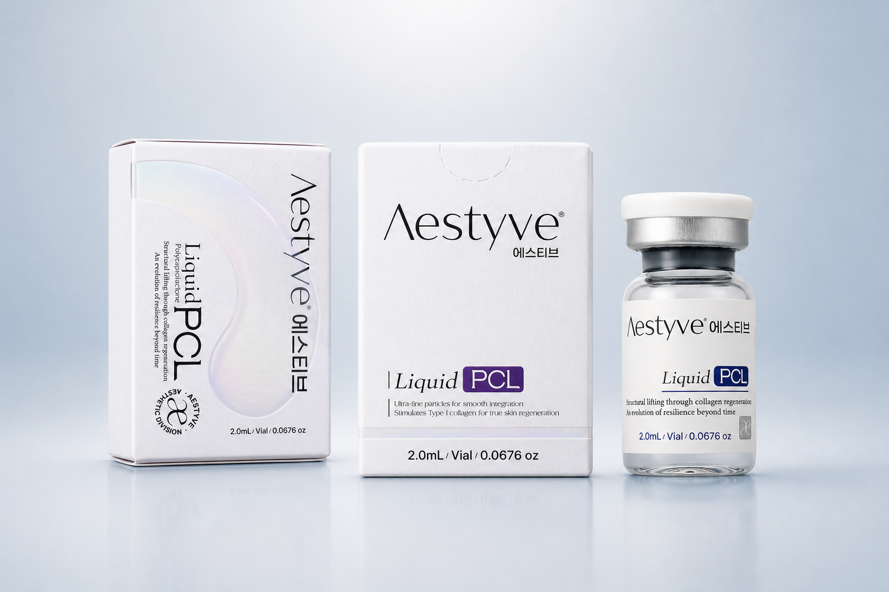
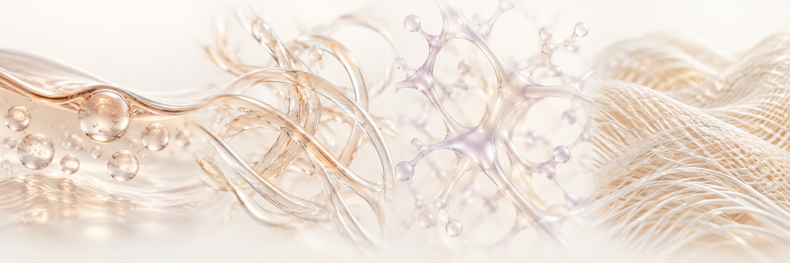
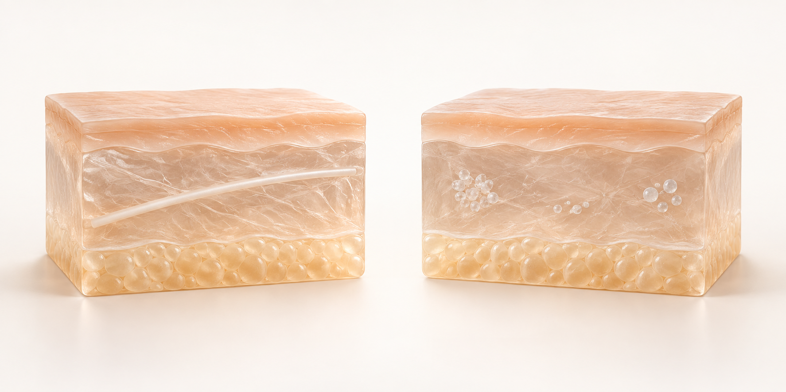

액상형 제형
제품의 형태와 사용 목적을 함께 살펴봅니다.
BIOSTIMULATION · LIQUID PCL
폴리카프로락톤이라는 소재에서 출발합니다. 에스티브 리퀴드 PCL은 탄력·피부결·광채를 중심에 둔 액상형 PCL 제품으로 소개됩니다. 제형의 특성과 소재 연구를 차분히 살펴보세요.

브랜드 제공 제품 이미지 · 포장 구성은 공급 제품 라벨 기준
제형 · 소재 · 피부 구조 · 근거. 네 가지 관점으로 Liquid PCL을 이해합니다.
제품의 형태와 사용 목적을 함께 살펴봅니다.
폴리카프로락톤이라는 소재에서 출발합니다.
탄력·피부결·광채를 중심에 둔 제품 방향입니다.
소재 문헌과 실제 공급 제품의 자료를 구분합니다.
01 / FORMULATION & MATERIAL
브랜드는 초미세입자를 활용한 액상형 제형으로 설명합니다. 입자의 존재와 크기, 완제품의 특성은 제품별 자료로 구분합니다.

액상처럼 느껴지는 제형이라는 브랜드 설명입니다. 정확한 입도 분포와 농도는 최신 규격서로 확인합니다.
PCL 기반 제형의 콜라겐 형성을 관찰한 연구가 있습니다. 타 제형 연구를 에스티브 제품의 임상 결과로 대체하지 않습니다.
탄력·피부결·광채를 중심에 둔 제품 포지셔닝입니다. 특정 개선 정도나 지속기간을 보장하는 표현은 아닙니다.
개인의 피부 상태, 허가된 사용목적과 사용설명서를 바탕으로 의료진이 적합성을 판단합니다.
입자가 미세하다는 설명은 입자가 없다는 뜻이 아닙니다. 육안으로 맑게 보이는 것만으로 입자 크기나 균일한 조직 확산을 입증할 수 없습니다. 이 페이지는 브랜드가 제공한 초미세입자 제형 설명을 사용하며, 비입자 PCL 연구와 명확히 구분합니다.
눈에 보이지 않는 소재와 피부 구조를 시각적으로 살펴보세요. 아래 세 가지 관점을 선택하면 설명이 바뀝니다.
액상형이라는 설명과 입자 크기는 서로 다른 정보입니다. 실제 입도 분포·농도·균일성은 제품별 규격으로 확인합니다.
진피는 세포와 콜라겐 등 세포외기질이 함께 이루는 구조입니다. 이 그림은 이해를 돕는 개념도이며 제품 투여 후 변화를 보여주지 않습니다.
PCL 관련 문헌은 제형과 연구 대상이 서로 다릅니다. 소재 연구를 본 제품의 임상 효과로 대체하지 않고, 제품에 적용되는 근거를 별도로 확인합니다.
개념 시각화 · 실제 입자 크기, 주입 위치, 조직 분포 또는 치료 전후를 나타내지 않습니다.
제품 정보에서 공급 검토까지, 필요한 내용을 단계별로 연결했습니다.
02 / LIQUID vs THREAD
PCL이라는 소재명만으로 제품의 작용 방식과 결과를 같게 볼 수는 없습니다.

| 항목 | PCL 리프팅실 | Aestyve Liquid PCL |
|---|---|---|
| 형태 | 고체 실 형태 · 구조는 제품별로 다름 | 브랜드 설명상 초미세입자 액상 제형 |
| 접근 방식 | 실의 설계와 삽입 방식에 따른 조직 지지 | 콜라겐·스킨 퀄리티 중심의 제품 포지셔닝 |
| 조직 반응 | 실 소재·구조·위치와 평가 시점에 따라 다름 | 제형·농도·분포 및 제품별 근거로 판단 |
| 사용 기준 | 해당 실 제품의 허가사항과 IFU | 해당 공급 제품의 허가사항과 IFU |
형태와 검토 기준의 비교이며, 제품 간 임상적 우열 또는 동일 효과를 뜻하지 않습니다.
03 / LITERATURE
아래 네 문헌은 PCL 소재와 서로 다른 제형·실에 관한 자료입니다. 에스티브 리퀴드 PCL 자체의 임상 결과가 아닙니다.
Clin Cosmet Investig Dermatol. 13:31–48.
PCL의 생분해 특성과 미용 분야의 콜라겐 자극 소재 활용을 정리한 종설입니다.
논문 원문 ↗J Cosmet Laser Ther. 17(2):99–101.
2명 대상 예비 연구에서 다른 PCL 기반 필러 주입 후 13개월 조직을 분석해 입자 주변 콜라겐 형성을 관찰했습니다.
논문 원문 ↗Dermatol Ther. 34(2):e14770.
비입자 PCL 제형의 안전성·분해·신생 콜라겐을 쥐 모델에서 평가했습니다. 본 제품의 초미세입자 설명과는 기술적 접근이 다릅니다.
논문 원문 ↗J Cosmet Dermatol. 20(9):2743–2749.
PCL 등 서로 다른 실 소재를 마우스 모델에서 비교한 연구입니다. 실 주변 조직 변화에 관한 결과를 액상 제품의 효과 수치로 옮기지 않습니다.
논문 원문 ↗04 / PRODUCT DOSSIER
공급 제품의 최신 문서와 대조할 기본 정보를 정리했습니다.
05 / BUYER FAQ
소재 문헌과 제품 자체의 시험·임상 자료를 구분해 검토합니다. 공급 제품의 허가된 사용목적과 최신 IFU가 우선이며, 개선 정도와 기간은 개인 및 시술 조건에 따라 달라질 수 있습니다.
대상 국가, 회사·클리닉명, 희망 수량과 도입 시점을 알려주세요. 공급 가능 여부와 견적, 샘플 조건은 개별 확인 후 안내합니다.
최신 규격서, 라벨과 IFU를 먼저 요청하고, 시장 요건에 따라 등록 자료와 배치별 시험자료의 제공 가능 여부를 확인하세요. 각 문서가 실제 공급 제품·로트에 적용되는지 확인합니다.
대상 시장의 등록·수입 요건과 유통 자격을 검토해야 합니다. 이 페이지의 공개 자체가 해당 국가의 판매 승인을 뜻하지 않습니다.
06 / START A CONVERSATION
국가·수량·희망 일정과 함께 문의하시면 필요한 검토 항목을 정리할 수 있습니다.
제품 · 클리닉 · 유통 파트너 문의
Polycaprolactone · 2.0 mL / Vial
공급 제품의 라벨·로트·사용기한을 기준으로 제조 관련 문서의 적용 범위를 확인합니다. 제조 정보는 해당 제품 자료를 기준으로 안내합니다.
제품 규격서, 라벨·IFU, 해당 완제품 CoA 및 등록 관련 자료를 요청할 수 있습니다. 제공 가능 문서는 제품과 대상 국가에 따라 확인합니다.
도입 국가와 수입 주체를 알려주세요. 제품별 등록·수입 요건을 검토한 후 공급 가능 여부를 안내합니다.
표시 규격은 브랜드 제공 자료 기준이며, 주문 시 최신 공급 라벨·규격서와 대조합니다.
제품의 특성과 적용 규격에 따라 원료부터 완제품까지 품질 자료를 검토합니다.
원료 확인, 성분·함량, pH 및 제품별 물성 규격
적용 대상 제품의 무균·미생물, 엔도톡신 및 잔류물 시험 항목
제조번호, 사용기한, 충전량, 포장 밀봉 상태와 보관 조건
PCL 제품은 조성·농도, 입도 분포와 제형의 균일성 등 해당 제품의 규격을 확인합니다.
인증과 시험 수치는 해당 제품·모델·제조소 또는 로트에 적용되는 유효한 증빙이 확인된 경우에만 공개합니다. 문서의 발행기관, 발행일, 적용 범위를 함께 확인하며, 원료 시험 결과와 완제품 시험 결과를 구분합니다.
위 내용은 제품별 품질 검토 항목이며, 모든 제품의 시험 완료나 인증 취득을 의미하지 않습니다.